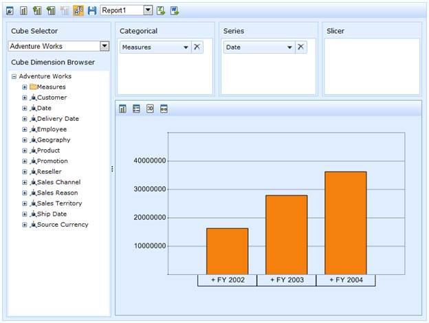
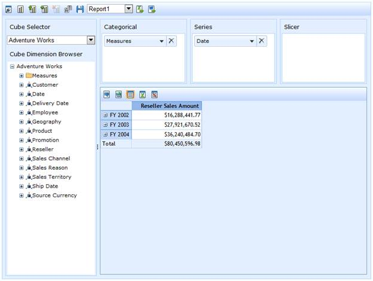
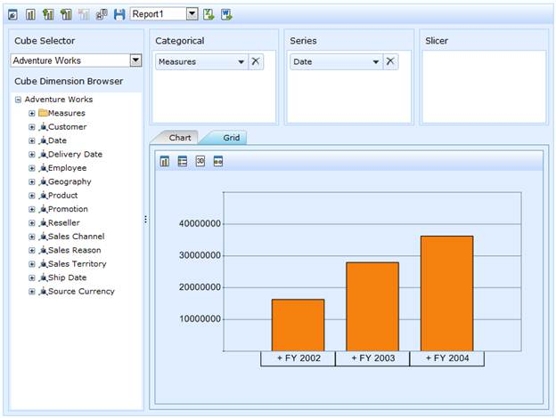

The display mode property enables the user to set only chart control or only grid control or both. The toolbar is altered according to the selection of the control.
Chart Only
The ChartOnly option displays only the chart control in OLAP Client along with its toolbar items.
|
[C#] this.OlapClient1.DisplayMode = DisplayMode.ChartOnly; this.OlapClient1.DataBind(); |
|
[VB] Me.OlapClient1.DisplayMode = DisplayMode.ChartOnly Me.OlapClient1.DataBind() |

Figure 41: Chart Only
Grid Only
The GridOnly option displays only the Grid control in OLAP Client along with its toolbar items.
|
[C#] this.OlapClient1.DisplayMode = DisplayMode.GridOnly; this.OlapClient1.DataBind(); |
|
[VB] Me.OlapClient1.DisplayMode = DisplayMode.GridOnly Me.OlapClient1.DataBind() |

Figure 42: Grid Only
ChartAndGrid
The ChartAndGrid option displays both chart and grid controls along with its toolbar items. In order to switch between the two controls, the appropriate tab is selected.
|
[C#] this.OlapClient1.DisplayMode = DisplayMode.ChartAndGrid; this.OlapClient1.DataBind(); |
|
[VB] Me.OlapClient1.DisplayMode = DisplayMode.ChartAndGrid Me.OlapClient1.DataBind() |

Figure 43: ChartAndGrid
Table 14: DisplayMode Property
|
Property |
Description |
Type |
Data type |
Reference link |
|
DisplayMode |
The display mode consists of three options, namely ChartOnly, GridOnly and ChartAndGrid. These options would present OLAP Client with only a chart control or with only a grid control or both respectively. |
Server side |
enum |
- |